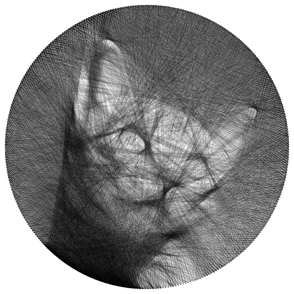

🎨 String Art Generator
High-performance Go implementation with Wu anti-aliased compositing
⭐ BEST VERSION
v11.0
8/10 Quality

v11.0: Wu Anti-Aliased Compositing
Wu's anti-aliased line drawing matches SVG renderer behavior. Combined with multi-start greedy, iterative replacement, and calibrated stroke-width for optimal SVG output.
350
Pins
5685
Lines
160s
Generation
0.224
SSIM
+14.4% vs V10
8117
MSE
-6.2% vs V10

SVG Output (zoomable, vector)
SVG Rendered at 800px (what you see in browser)
💡 Why V11 is the best: Wu's anti-aliased line drawing in the canvas simulation matches how SVG renderers actually draw lines. This eliminates the canvas↔SVG gap that plagued V10. Combined with 350 pins (vs 300), more lines (5685 vs 3489), and iterative line replacement, V11 achieves +14.4% SSIM improvement over V10.
Version Comparison
V11 (new best) vs V10 (previous best). V11 has significantly better contrast, sharper details, and more recognizable features.
V11 (SSIM 0.224) ⭐ NEW
V10 (SSIM 0.196)
Previous Best
v10.0
v10.0: Source-Over Compositing (Bresenham)
Previous best using Bresenham rasterization with source-over compositing.
300
Pins
3489
Lines
6.6s
Generation
0.196
SSIM
8657
MSE
V10 SVG Rendered at 800px
V11 Algorithm Details
- Wu's Anti-Aliased Lines: Fractional pixel coverage matching SVG renderer behavior
- Source-Over Compositing: canvas[px] *= (1 - α × coverage), per-pixel Wu coverage
- Calibrated Alpha (0.15): Matched to SVG stroke-width 0.12mm for optimal SSIM
- Multi-Start Greedy: 3 starting pins, picks best result
- Iterative Replacement: 2 passes replacing each line with better alternatives
- Line Removal: Removes lines that hurt quality after greedy phase
- Importance Map: 60% darkness + 40% edges, center-weighted Gaussian
- Parallel Evaluation: 8 workers for fast candidate scoring
- Adaptive Stopping: Detects quality plateau, jumps to high-error regions
Technical Specifications
600mm
SVG Size
0.12mm
Stroke Width
800px
Processing
Go
Language
Usage: go run . --input photo.jpg --output art.svg --pins 350 --lines 7000 --weight 20 --wu --opacity 0.15